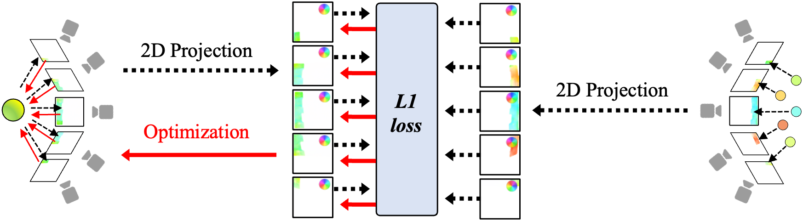
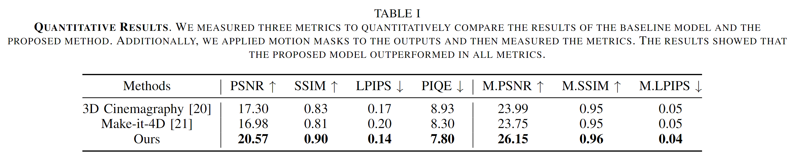
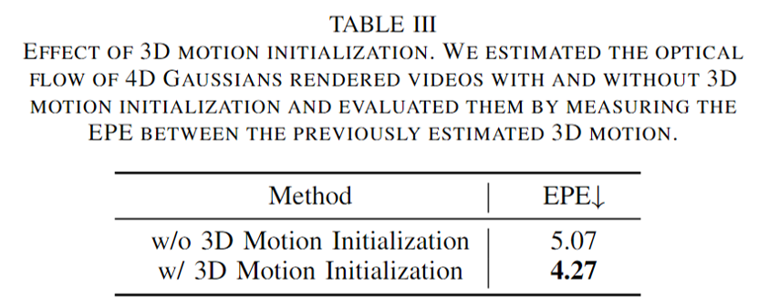
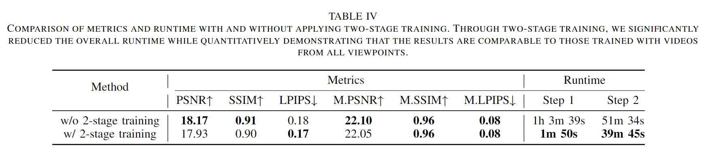

Recently, a field known as dynamic scene video has emerged,
which creates videos with natural animations from specific camera perspectives using a combination of single image animation and 3D photography.
These methods utilize Layered Depth Images (LDIs), which are created by dividing a single image into multiple layers based on depth, to represent a pseudo 3D space.
However, there are limitations when attempting to discretely separate most elements, including fluids, in a continuous landscape, and 3D space cannot be fully represented this way.
Therefore, achieving complete 4D space virtualization through explicit representation is necessary, and we propose this approach for the first time.
Abstract
To achieve realistic immersion in landscape images,
fluids such as water and clouds need to move within the image while revealing new scenes from various camera perspectives.
Recently, a field called dynamic scene video has emerged, which combines single image animation with 3D photography.
These methods use pseudo 3D space, implicitly represented with Layered Depth Images (LDIs).
LDIs separate a single image into depth-based layers, which enables elements like water and clouds to move within the image while revealing new scenes from different camera perspectives.
However, as landscapes typically consist of continuous elements, including fluids, the representation of a 3D space separates a landscape image into discrete layers,
and it can lead to diminished depth perception and potential distortions depending on camera movement.
Furthermore, due to its implicit modeling of 3D space, the output may be limited to videos in the 2D domain, potentially reducing their versatility.
In this paper, we propose representing a complete 3D space for dynamic scene video by modeling explicit representations, specifically 4D Gaussians, from a single image.
The framework is focused on optimizing 3D Gaussians by generating multi-view images from a single image and creating 3D motion to optimize 4D Gaussians.
The most important part of proposed framework is consistent 3D motion estimation, which estimates common motion among multi-view images to bring the motion in 3D space closer to actual motions.
As far as we know, this is the first attempt that considers animation while representing a complete 3D space from a single landscape image.
Our model demonstrates the ability to provide realistic immersion in various landscape images through diverse experiments and metrics.
3D-MOM Framework
The overview of our pipeline.: Our goal is to optimize 4D Gaussians to represent a complete 3D space, including animation, from a single image.
(a) A depth map is estimated from the given single image, and it is converted into a point cloud.
For optimizing the 3D Gaussians, multi-view RGB images are rendered according to the defined camera trajectory.
(b) Similarly, multi-view motion masks are rendered for the input motion mask.
These are utilized to estimate multi-view 2D motion maps along with the rendered RGB images.
3D motion is obtained by unprojecting the estimated 2D motion into the 3D domain.
In this context, the proposed 3D Motion Optimization Module (3D-MOM) ensures consistent 3D motion across multi-views.
(c) Using the optimized 3D Gaussians and generated 3D motion, 4D Gaussians are optimized for changes in position, rotation, and scaling over time.
3D Motion Optimization Module. To maintain consistency of motion across multi-views, 3D motion is defined from the point cloud and projected into 2D images using camera parameters.
The L1 loss between the projected motion and the estimated motion map as the ground truth is computed, minimizing the sum of losses for multi-view to optimize the 3D motion.

Quantitative Results
Quantitative comparison with existing Dynamic Scene Video models:
In Table I, we show the quantitative results of our method compared to other baselines on reference and non-reference metrics.
Our approach outperforms the other baseline on all metrics in the context of view generation.
In particular, our method achieved the highest scores in PSNR, SSIM, and LPIPS, indicating that the generated views are of high fidelity and perceptually similar to the ground truth views.
Furthermore, we demonstrated that our proposed method out-performs existing methods on non-reference metrics by locally

Quantitative Object Interactive Skeleton Results
Table 2 provides a comparison of results for the proposed loss scale.
Applying our loss scale shows improvement in object interactive skeleton evaluation performance across all models.
Additionally, Table 3 presents a performance comparison of the proposed Associative Attention mechanism.
It is evident that our method significantly outperforms modules such as conventional attention or attention + GNN (Graph Neural Network).
Visualization Results
We present qualitative comparison results with other baseline methods. In this case, our proposed model, as an explicit representation, is projected to 2D video for comparison of results.
The process of separating the input image into LDIs in 3D-Cinemagraphy leads to artifacts on animated regions and fails to provide natural motion which results in reduced realism.
Similarly, Make-It-4D also utilizes LDIs to represent 3D for multi-view generation, which results in lower visual quality.
Additionally, due to unclear layer separation, objects appear fragmented or exhibit ghosting effects, where objects seem to leave behind afterimages.
In contrast, the proposed model represents a complete 3D space with animations, providing less visual artifact and high rendering quality from various camera viewpoints.
Therefore, our method provides more photorealistic results compared to others for various input images.
1) 3D Motion Optimization Module:strong> Independently estimated 2D motion from multi-view images can result in different motion values for the same region in 3D space.
Directly using these 2D motions to animate viewpoint videos can fail to train 4D Gaussians to represent natural motion.
Table II shows the results of EPE between multi-view flows with and without the 3D Motion Optimization Module.
The estimated motions are projected to the center point through a depth map for the same position measurement.
The results indicate that without 3D Motion Optimization, estimated flows are significantly different for the same positions, while our 3D motion demonstrates outstanding performance in consistency across entire viewpoints with almost no variance.
Fig. 4 (a) shows the visualized results of 2D motion and projected 3D motion.
Similarly, it indicates that 3D motion represents motion information in 3D space, which ensures consistency when projected to different viewpoints.
We animated viewpoint videos using each motion and trained 4D Gaussians on multi-view videos.
However, as shown in Fig. 4 (b), the rendered video of 4D Gaussians and estimated optical flow have the lack of motion consistency in the viewpoint videos caused unnatural movements.
2) Single image animation model:strong> In our model, it is crucial to utilize a single image animation model that generates viewpoint videos by accurately reflecting 3D motion to train 4D Gaussians.
Fig. 5 shows the results of trained 4D Gaussians using animated videos by two single image animation models, SLR-SFS [8] and Text2Cinemagraph [9].
Comparing the rendered 4D Gaussians, we observe that the motion is trained differently depending on the single image animation model.
Additionally, training with viewpoint videos animated by SLR-SFS [8], our model produced better results.

3) Effect of 3D motion initialization:strong> To verify the importance of 3D motion in training 4D Gaussians, we compared the results of our method with and without 3D motion initialization.
When applying animation to fluids, repeated patterns occurred. In Table III, it shows EPE score of estimated optical flow from each rendered video.
It indicates that the explicit representation of 4D Gaussians, which train multi-views and motion jointly, finds it difficult to capture the overall motion
accurately when trained only with viewpoint videos.
Fig. 6 shows the estimated optical flow from the rendered video of 4D Gaussians. This demonstrates that it is difficult to accurately learn motion without 3D motion initialization.
In contrast, our method shows that it can learn the overall 3D motion.

4) Effect of Two-stage training:strong> To achieve faster and more stable results with our algorithm, we separated the 4D Gaussians learning process by viewpoints and time axis.
In step 1, we trained 3D Gaussians using all viewpoints, and in step 2, we trained 4D Gaussians using videos from sampled view-points.
Fig. 7 shows the results of training 4D Gaussians with animated videos for all viewpoints, while the bottom shows the results of our two-stage training approach trained on only three viewpoint videos.
This demonstrates that our training method produces results almost identical to those obtained by training with videos from all viewpoints.
Additionally, as shown in Table IV , which was evaluated on a sample validation set, our method not only maintains high performance but also achieves a significant efficiency improvement.
It is over 30 times faster in generating videos and requires about one-third less time to train the 4D Gaussians, demonstrating an optimal balance between speed and accuracy.